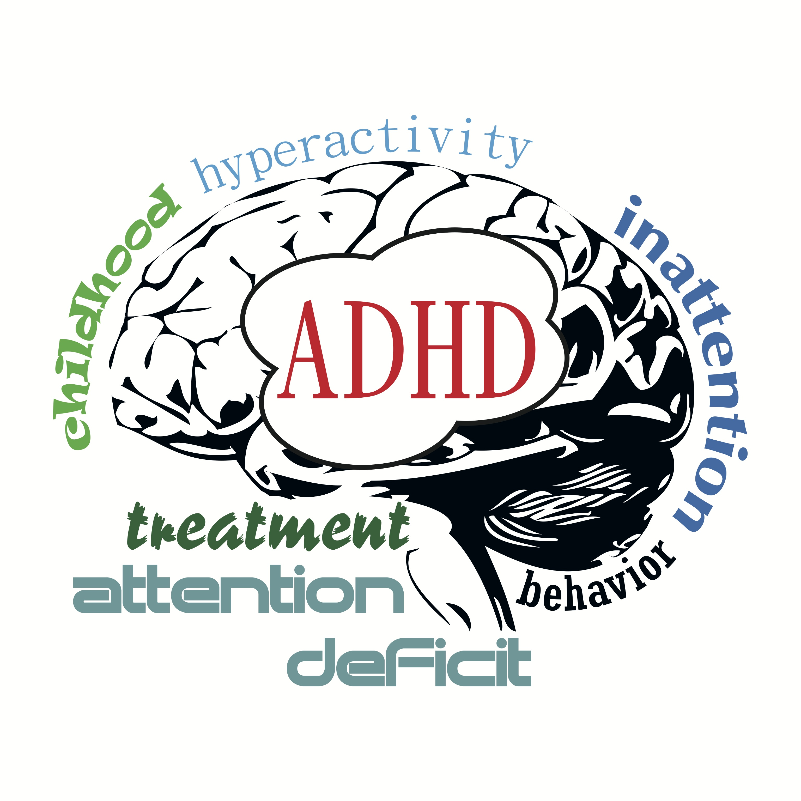

|  | My way with ADHDbyYUJUN |
Attention-deficit hyperactivity disorder (ADHD), like other psychiatric disorders, represents an evolving construct that has been refined and developed over the past several decades in response to research into its clinical nature and structure. The clinical presentation and course of the disorder have been extensively characterised. Efficacious medication-based treatments are available and widely used, often alongside complementary psychosocial approaches. However, their effectiveness has been questioned because they might not address the broader clinical needs of many individuals with ADHD, especially over the longer term. Non-pharmacological approaches to treatment have proven less effective than previously thought, whereas scientific and clinical studies are starting to fundamentally challenge current conceptions of the causes of ADHD in ways that might have the potential to alter clinical approaches in the future. In view of this, we first provide an account of the diagnosis, epidemiology, and treatment of ADHD from the perspective of both the fifth edition of the Diagnostic and Statistical Manual of Mental Disorders and the eleventh edition of the International Classification of Diseases. Second, we review the progress in our understanding of the causes and pathophysiology of ADHD on the basis of science over the past decade or so. Finally, using these discoveries, we explore some of the key challenges to both the current models and the treatment of ADHD, and the ways in which these findings can promote new perspectives.
Here are some thoughts and methods.